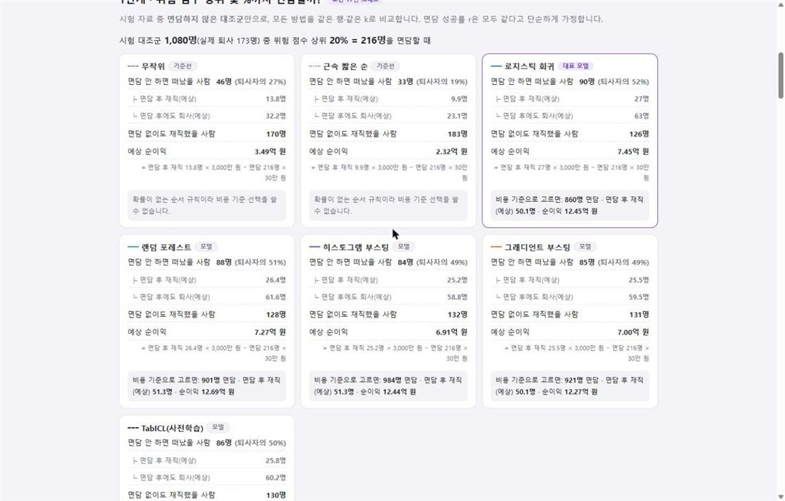
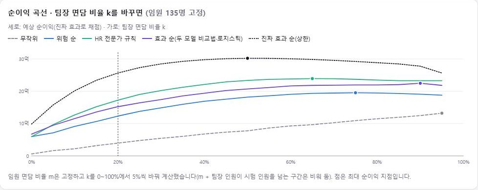
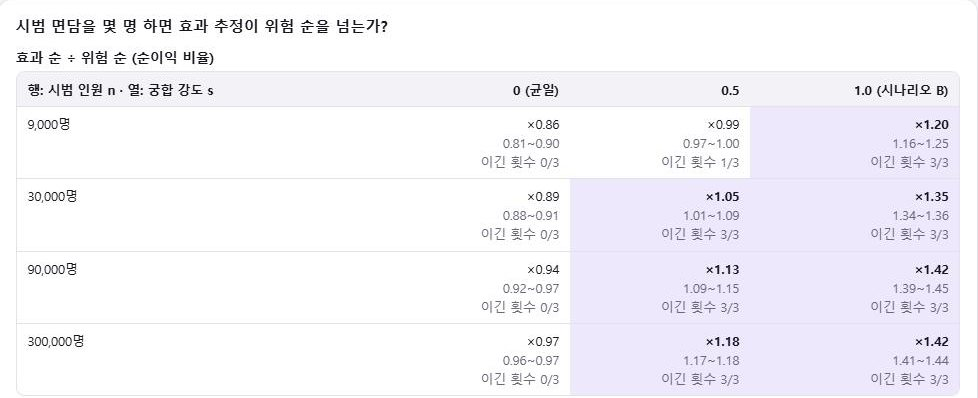
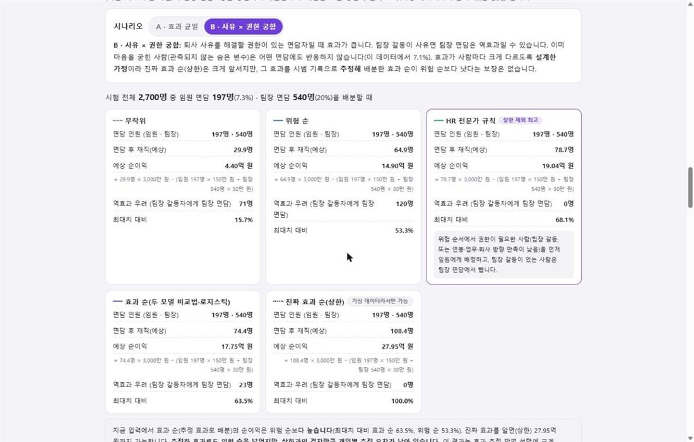

[아이펠 AI에이전트 3기] AI 이해하고 사용하기 ③, 누구부터, 누가 면담해야 퇴사를 막을까 🤝
📊 ➡️ 💰 ➡️ 🤝
안녕하세요! 👋 아이펠 AI에이전트 3기, "AI 이해하고 사용하기" 세 번째 이야기예요.
이번에는 모듈 마무리 과제, "내 도메인에서 AI로 개선 지점 찾아서 PoC 만들기" 예요. 제 도메인은 HR 15년이니까, 고민 없이 퇴사 방지 면담을 골랐어요. 🙋
이 글은 이렇게 흘러가요.
🤔 왜 했나 → 🧪 어떻게 했나 (데이터·분석 기법) → 🔍 무엇을 확인했나 → 🛠️ 어떻게 쓸까
1. 왜 이 실험을 했나 🤔
퇴사 위험 점수가 있어도 남는 질문
요즘은 "퇴사 위험 점수"를 만드는 일 자체는 어렵지 않아요. 그런데 점수를 받아 든 인사팀에는 질문이 남아요.
- 누구부터 면담하지?
- 몇 명이나 해야 하지?
- 누가(팀장? 임원?) 면담해야 하지?
특히 실장·본부장·대표 같은 임원의 면담 시간은 비싸고 적어요. 아무에게나 쓸 수 없죠.
💡 HR식으로 이해하기: 제가 겪은 퇴사 사례 7건을 돌아보니, 6건은 인사 담당자나 인사팀장이 면담했어요. 그런데 연봉 동결, 연봉 역전, 팀장과의 갈등, 원하는 업무에서 배제 같은 사유는 인사팀이 직접 바꿀 수 없는 것들이에요. 사유를 해결할 권한이 있는 대표가 면담한 1건만 퇴사가 6개월 늦춰졌어요.
그래서 세운 가설
🤝 가설 1: 위험 점수는 "떠날 가능성"을 알려 줄 뿐, "면담하면 남을지"는 알려 주지 않는다.
위험이 높은 사람 중에는 이미 마음을 굳힌 사람도 있고, 이런 사람은 누가 면담해도 남지 않는다.
🤝 가설 2: 면담 효과는 누가 면담하느냐에 따라 달라진다.
퇴사 사유를 해결할 권한이 있는 사람이 면담해야 효과가 크다. (연봉 문제는 임원이, 팀장 갈등은 팀장이 아닌 사람이)
그리고 오래 품어 온 질문이 하나 더 있었어요. "사람마다 다른데, 이걸 통계로 잡아낼 수 있을까?" 이번 실험의 중심 질문이 됐어요.
교안과 연결하면
| 교안 | 이 과제에 가져온 것 |
|---|---|
| 📈 17번: AI는 어디까지 쓰이고 있을까 | 같은 시험 자료로 기준선과 비교하기, 정확도의 함정, 문턱은 사람이 정한다 |
| 🧭 18번: 내 업무 어디에 AI를 넣을까 | 도구가 아니라 업무의 병목에서 출발하고, 만들기 전에 성공 기준을 적고, 구축할지 말지를 정한다 |
솔직히 고백하면, 18번 교안은 과제를 거의 다 만든 날 공개됐어요. 그래서 성공 기준은 "결과를 본 뒤 정리한 것" 이라고 문서에 그대로 밝혔어요. 숨기는 것보다 그게 맞다고 생각했어요.
2. 어떻게 했나: 데이터 🗂️
🔒 실제 면담 기록은 쓸 수 없었어요
면담 기록은 회사 안에서도 볼 수 있는 사람이 정해진 자료예요.
| 누가 | 볼 수 있는 범위 |
|---|---|
| 인사팀 중 권한을 받은 소수 | 전체 기록. 인사팀 안에서도 아는 사람을 최소한으로 둬요 |
| 조직장 | 자기 조직 구성원의 면담 내용 |
| 대표 | 전체 (보고서로 요약해 받는 회사도 있어요) |
이런 자료를 누구나 보는 GitHub에 올릴 수는 없죠. 그리고 더 근본적인 문제가 있어요.
❓ "그 사람을 면담했으면 남았을까?"는 실제 기록으로 증명할 수 없어요. 한 사람에게 면담한 경우와 안 한 경우를 동시에 해 볼 수 없으니까요.
🧑💼 그래서 가상 직원 9,000명을 만들었어요
가상 데이터는 직원마다 "면담했을 때"와 "안 했을 때"의 퇴사 확률을 모두 알고 있어요. 그래서 어떤 배정 방법이 퇴사를 더 많이 막는지 채점할 수 있어요.
생성 규칙의 방향은 국내 연구에 맞췄어요. 연봉·복지·직무 만족이 낮을수록 이직이 많다는 연구예요(정규직 청년 이직률 대기업 17.2%, 중소기업 약 25%).
만든 데이터 몇 줄을 보면 이래요. 만족도는 1~5점이고 낮을수록 불만이에요.
| 직원 | 눈에 띄는 사유 | 면담 없을 때 퇴사 확률 | 팀장이 면담하면 | 임원이 면담하면 |
|---|---|---|---|---|
| #1 | 원하는 업무 불만(2) | 19% | 7.8%p ↓ | 8.9%p ↓ |
| #6777 | 연봉 불만(2), 팀장 갈등 | 44% | 10.3%p ↑ 😱 | 27.1%p ↓ |
| #1330 | 팀장 갈등 | 52% | 10.1%p ↑ 😱 | 27.8%p ↓ |
| #2706 | 모든 만족도 1점, 팀장 갈등, 이미 결심 | 90% | 변화 없음 | 변화 없음 |
↓는 면담하면 떠날 확률이 내려간다는 뜻(좋음)이고, ↑는 오히려 올라간다는 뜻이에요.
이 표에 이번 실험의 핵심이 다 들어 있어요.
- #6777, #1330: 팀장과 갈등이 있는 사람에게 팀장이 면담하면 오히려 떠날 확률이 10%p 오르고, 임원이 면담하면 27%p 내려가요.
- #2706: 퇴사 확률 90%로 가장 위험하지만, 이미 마음을 굳혀서 어떤 면담도 소용없어요.
🏢 두 개의 회사(시나리오)
면담 효과 규칙만 다르게 해서 두 회사를 만들었어요. 실제 회사가 어느 쪽인지 모르니까, 두 경우의 결론을 나란히 보기로 했어요.
| 시나리오 A: 효과 균일 | 시나리오 B: 사유 × 권한 궁합 | |
|---|---|---|
| 면담 효과 | 누구에게나 같음 (임원은 팀장의 2배) | 사유와 면담자 권한에 따라 다름 |
| 이미 마음을 굳힌 사람 | 없음 | 7.1% |
| 평균 효과 | 같게 맞춤 | 같게 맞춤 |
시나리오 B는 제 현업 경험을 그대로 코드로 옮긴 거예요.
# generate_data.py (일부) — 시나리오 B
# low_x = 불만 정도(0~1).
# 숫자가 클수록 그 사유일 때 면담 효과가 커요.
EFFECT_B = {
# 팀장: 업무 조정 정도만 가능, 팀장 갈등이면 역효과
"lead": {"base": 0.3, "low_job_fit": 0.3,
"low_direction": 0.1,
"leader_conflict": -0.8, "floor": -0.4},
# 임원: 처우·부서 이동·비전 공유 권한
"exec": {"base": 0.2, "low_pay": 0.6,
"low_job_fit": 0.5, "low_benefits": 0.2,
"leader_conflict": 0.7, "low_direction": 0.6},
}💡 HR식으로 이해하기: "연봉 불만(
low_pay)은 팀장 칸에 아예 없다"가 제 경험이에요. 팀장은 연봉을 올려 줄 권한이 없으니까요. 대신 임원 칸에는 0.6이 들어가 있어요.
3. 어떻게 했나: 분석 기법 🧪
① 퇴사 위험 점수 → ② 비용으로 면담 인원 정하기 → ③ 면담 효과 예측 → ④ 누가 면담할지 배정 → ⑤ 순이익으로 채점
| 기법 | 쉽게 말하면 | 왜 골랐나 |
|---|---|---|
| 로지스틱 회귀 · 랜덤 포레스트 · 부스팅 2종 | 면담을 안 하면 떠날 확률(퇴사 위험 점수)을 내는 모델 | 교안 17번처럼 같은 시험 자료로 여러 모델을 공정하게 비교 |
| TabICL | 미리 학습된 표 데이터 전용 모델(교안 17번) | 성격이 다른 후보도 넣어 보려고 |
| 확률 보정 | 점수 0.3인 사람 중 실제로 약 30%가 떠나도록 맞추기 | 비용 계산에 점수를 확률로 써야 해서 |
| 면담 효과 예측 (업리프트, 두 모델 비교법) | 면담한 사람과 안 한 사람의 모델을 따로 만들어 그 차이를 효과로 봄 | "떠날 사람"이 아니라 "면담하면 남을 사람"을 찾으려고 |
| HR 전문가 규칙 | 위험 점수 순서에, 사유에 맞는 면담자를 고르는 규칙을 더함 | 데이터가 적을 때 현업 지식이 얼마나 통하는지 보려고 |
| 민감도 분석 | 시범 면담 인원을 9천~30만 명으로 바꿔 가며 반복 | "몇 명이면 통계로 잡히나"에 답하려고 |
면담 효과 예측은 생각보다 단순해요. 갈래마다 모델을 하나씩 만들고, 같은 사람에 대한 예측의 차이를 봐요.
# train_eval.py (일부, 읽기 쉽게 줄만 나눔)
# 면담 효과 예측: 두 모델 비교법(T-learner)
class TLearner:
def fit(self, X, talk, y):
# 면담 없음 / 팀장 / 임원 갈래마다 모델을 따로 학습
self.models = {}
for arm in ("none", "lead", "exec"):
m = self.make(self.seed)
self.models[arm] = m.fit(X[talk == arm], y[talk == arm])
return self
def tau(self, X):
p = {arm: m.predict_proba(X)[:, 1]
for arm, m in self.models.items()}
# 효과 = 면담 안 했을 때 − 면담했을 때 퇴사 확률
return {"lead": p["none"] - p["lead"],
"exec": p["none"] - p["exec"]}HR 전문가 규칙은 이렇게 생겼어요. 위험 점수 순서로 보되, 권한이 필요한 사유면 임원에게, 팀장 갈등이 있으면 팀장 면담에서 빼요.
# allocate.py (일부, 읽기 쉽게 줄만 나눔) — HR 전문가 규칙
# 1) 위험 점수(AI)가 높은 순으로 줄 세우기
order = order_desc(risk, tiebreak)
# 2) 권한이 필요한 사유(연봉·업무·방향 불만, 팀장 갈등)가
# 있는 사람부터 임원 면담 m명
need = needs_authority[order] == 1
ex = np.concatenate([order[need], order[~need]])[:m]
# 3) 남은 사람 중 팀장 갈등이 없는 사람만 팀장 면담
rest = [i for i in order
if not taken[i] and conflict[i] == 0]4. 무엇을 확인했나 🔍
| 질문 | 확인한 것 |
|---|---|
| Q1. 누구부터? | 위험 점수 상위 20%만 면담해도 떠날 사람의 52% 를 찾았어요 |
| Q2. 몇 명을? | 모델이 아니라 회사 비용이 정해요 |
| Q3·Q5. 누가? | 사유마다 효과가 다른 회사(B)에서는 사유에 맞는 면담자가 위험 순보다 40% 나았어요 |
| Q4. 통계로 잡히나? | 조건부로 예. 사유별 차이가 크면 시범 기록 9,000명으로도 잡혔어요 |
| Q6. 회사 규모가 달라도? | 대기업형·중소기업형 모두 같은 방향이었어요 |
📊 Q1. 누구부터: 가장 단순한 모델이 이겼어요
| 방법 | 상위 20%를 면담할 때 떠날 사람을 찾은 비율 |
|---|---|
| 아무렇게나 고르기 | 27% |
| 근속 짧은 순 (흔히 쓰는 감) | 19% |
| 로지스틱 회귀 (대표 모델) | 52% |
"근속이 짧은 사람이 잘 나간다"는 감은 오히려 아무렇게나 고르는 것보다도 못했어요. 😳
그리고 정확도의 함정도 직접 봤어요. 퇴사자가 16%뿐이라 "모두 남는다"고만 답해도 정확도가 84% 예요. 모델 정확도도 84%대라 정확도로는 아무것도 판단할 수 없었어요.
TabICL은 로지스틱과 거의 같았는데(시험 AUC 0.795 대 0.793), CPU로 약 23분이 걸렸어요. 로지스틱은 몇 초면 끝나요. "비슷하면 단순한 방법"을 그대로 체감했어요.

💰 Q2. 몇 명을: 모델이 아니라 비용이 정해요
면담 1건은 30만 원, 퇴사 1건을 막으면 3,000만 원을 아껴요. 면담으로 막을 확률을 30%로 잡으면 계산은 한 줄이에요.
# allocate.py (일부) — 비용 기준 선택
# 퇴사 확률 × 성공률(30%) × 퇴사 1건 비용(3,000만 원)
# > 면담 비용(30만 원)인 사람은 모두 면담
sel = prob * r * c_replace > c_lead
# → 퇴사 확률이 3.3%만 넘어도 면담하는 쪽이 이득| 면담 방식 | 면담 인원 | 순이익 |
|---|---|---|
| 위험 점수 상위 20% | 216명 | 7.45억 원 |
| 이득이 나는 사람은 모두 (비용 기준) | 860명 | 12.45억 원 |
💡 배운 것: "AUC가 높아도 문턱은 사람이 정한다"가 이런 뜻이었어요. 몇 명을 면담할지는 모델 성능이 아니라 회사의 비용 조건이 정해요.
🤝 Q3·Q5. 누가: 여기서 두 회사가 갈렸어요
| 방법 | A 순이익 | B 순이익 | B 역효과 우려 |
|---|---|---|---|
| 위험 순 (위험한 사람부터 임원 → 팀장) | 13.60억 | 12.32억 | 137명 |
| 위험 점수 + 사유에 맞는 면담자 (HR 규칙) | 12.88억 | 17.25억 | 0명 |
| 면담 효과 예측 (업리프트) | 11.87억 | 15.23억 | 30명 |
- 효과가 같은 회사(A) 에서는 "위험한 사람부터"가 정답이었어요.
- 사유마다 효과가 다른 회사(B) 에서는 위험 순이 최선의 절반에 그쳤어요. 앞의 #6777 같은 팀장 갈등자에게 팀장 면담을 137명이나 배정했거든요.

🧮 Q4. 사람마다 다른 효과, 통계로 잡힐까?
시범 면담 인원과 "사유별 효과 차이"를 바꿔 가며 세 번씩 반복했어요.

- 효과 차이가 없으면(왼쪽 열) 30만 명이어도 위험 순을 못 넘어요. 잡을 차이가 없으니까요.
- 효과 차이가 크면(오른쪽 열) 9,000명부터 세 번 모두 이겼어요.
15년 동안 막연했던 질문에 처음으로 숫자 답이 생겼어요. "조건부로 예." 🎯
🔄 반전: "9만 명 필요"라던 결론이 뒤집혔어요
처음에는 "면담 효과를 잡으려면 시범 기록이 약 9만 명 필요하다"는 결론이 나왔어요. 그런데 데이터의 나이 분포를 고치고 다시 돌렸더니, 다른 예측 방법이 선택되면서 사유별 효과 차이가 큰 회사라면 9,000명으로도 충분해졌어요.
알고 보니 처음 결론은 예측 방법을 하나로 고정한 데서 나온 것이었어요.
💡 배운 것: 비교 조건 하나를 고정할 때는, 그 조건이 결론을 좌우하지 않는지 먼저 확인해야 해요. 처음 결론을 믿었다면 "데이터가 부족하다"고 잘못 판단할 뻔했어요.
🧓 실패 사례도 모았어요
- 임원 면담 135자리 중 41자리가 앞의 #2706처럼 이미 마음을 굳힌 사람에게 갔어요. HR 규칙도 이건 못 걸렀어요.
- 실제 퇴사자 중 16%는 위험 점수 하위 절반에 있었어요. 이직 제안, 가족 사정처럼 설문에 드러나지 않는 사유는 모델이 원리상 못 잡아요.
5. 그래서 어떻게 쓸까 🛠️
📋 현업에서 쓰는 순서
- 웹 플래너에 우리 회사 값을 넣어요. 퇴사 1건 비용, 팀장·임원 면담 비용을 넣으면 "몇 명까지 면담하면 이득인지"가 바로 나와요.
- 위험 점수로 면담 대기 순서를 정해요. 감이나 근속 대신 점수를 기준으로 삼아요.
- 면담 전에 사유를 확인하고 면담자를 정해요. 연봉·업무·회사 방향 문제면 처우·부서 이동 권한이 있는 임원이, 팀장 갈등이면 팀장이 아닌 사람이 면담해요.
- 일부는 무작위로 나눠 시범 면담을 해요. 우리 회사가 A인지 B인지는 이 기록으로만 알 수 있어요.
🚫 하지 말아야 할 것
⚠️ 점수는 면담 대기 순서에만 써요. 개인 평가·징계·해고에 쓰면 리텐션 도구가 아니라 퇴출 도구가 돼요. 그리고 익명을 약속한 설문을 개인 선정에 쓰면 신뢰가 깨져요.
⚖️ PoC 판정
교안 18번대로 "구축할지 말지"를 정하면 이래요.
| 대상 | 판정 | 이유 |
|---|---|---|
| 위험 점수 + 사유 맞춤 면담자 | 시범 운영 | 기준선을 넘었고, 사유라는 근거가 있어 면담자가 검토할 수 있음 |
| 면담 효과 예측 모델 | 보류 | 무작위 시범 면담 기록이 아직 없음. 효과가 같은 회사(A)라면 오히려 손해 |
6. 웹 면담 플래너 🌐
비용과 인원을 바꾸면 결과가 바로 바뀌는 플래너를 GitHub Pages에 올렸어요.

- 임원 면담은 비율로 넣으면 인원으로 바꿔 보여 줘요(5% → 135명, 사람이니까 소수점은 버림).
- 아래로 내려가면 빠른 입력 막대가 따라와서, 2단계 결과를 보면서 바로 숫자를 바꿀 수 있어요.
그런데 배포하고 나서 이런 일이 있었어요.
🙋 나: 바꾸기로 한 게 전혀 반영이 안 되어 있어!
서버에는 새 파일이 올라가 있었는데, 브라우저가 예전 화면 파일을 10분 동안 저장해 두고 있었던 거예요. 파일 주소에 버전 표시(?v=날짜)를 붙여서 해결했어요. 웹은 "배포했다"와 "사용자가 본다"가 다르더라고요. 😂
🔍 마지막 검토에서 내 설명이 틀린 걸 찾았어요
제출 직전에 검토 에이전트에게 문서를 처음 보는 채점자처럼 읽어 달라고 했어요.
🤖 검토: "HR 전문가 규칙을 '모델 없이'라고 설명했지만, 코드는 위험 점수 순서를 씁니다."
위의 코드 그대로예요. 고치고 나니 오히려 "B에서 가장 나은 방법도 AI를 쓴 방법"이 되어 주장이 더 정확해졌어요. 😮
마무리 🌱
이번 과제를 한 문장으로 정리하면 이거예요.
🤝 면담 플래너는 퇴사 위험 점수로 "누구부터, 몇 명을" 면담할지 정하는 근거를 주고, 퇴사 사유에 따라 "누가" 면담해야 효과가 큰지 보여 준다.
다만 가상 데이터 실험이에요. 숫자는 "이런 구조라면"의 답이지, 우리 회사의 답은 아니에요. 그래서 다음 단계는 모델을 더 키우는 게 아니라 무작위 시범 면담 기록을 쌓는 것이에요.
AI를 넣을 자리는 결국 "누가 무엇을 결정하는가" 에서 찾게 되더라고요. 점수는 순서를 정하고, 사유를 듣고 판단하는 건 여전히 사람의 몫이에요. 🎯
- 🌐 면담 플래너: 퇴사 1건 비용과 면담 비용, 면담 인원을 넣으면 누구부터·누가 면담할지와 예상 순이익을 바로 계산해 주는 웹 도구예요. 위의 결과 카드와 그래프가 이 플래너 화면이에요.
To be continued… 🏃💨
← 글 목록으로